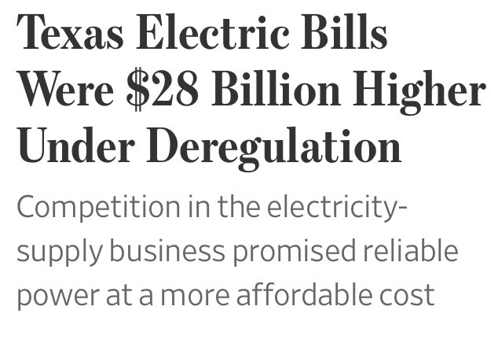
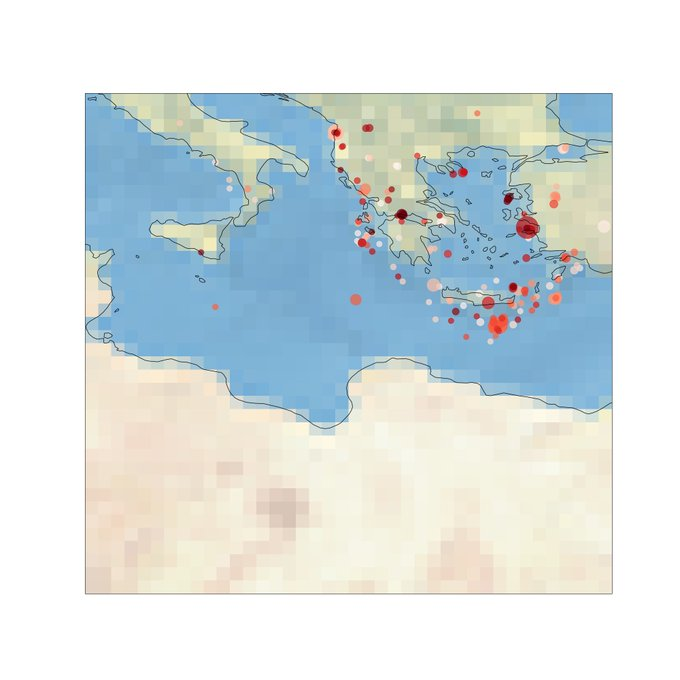

Week 8
ADL’s British-built H2.0 next generation hydrogen bus to deliver up to 300 zero-emission mile range
Happy to see #hydrogen cooperation also outside Europe! Our colleague @SabrineEU spoke at "EU-Korea green partnership: Connecting Korea and EU's #GreenDeal" about hydrogen strategies at EU and national level, w/ a focus on #mobility aspects. 🇪🇺🇰🇷
— Hydrogen Europe (@H2Europe) February 26, 2021
Recording https://t.co/nGmgj0kbKc pic.twitter.com/IA5UEo2zMV
I remember this fine innovation from 2019.. Aliminium hydride stores H2, then just add water and H2 comes out?
A patent was granted on it, a start-up founded set to produce.. News of peaceful applications of it wld be nice.
US DOE: "Ideal [military] equipment weight is 30% of a person’s body weight, but some soldiers have to carry more than 100 pounds. To lighten the load, the Army is looking into replacing lithium-ion batteries with fuel cells for power generation—decreasing battery weight by 50%. These 'wearable power systems' for the dismounted solider can produce 20 watts (W) of continuous output and 35W of peak power. To aid this effort, the U.S. Department of Energy (DOE) is working to drive down the cost of aluminum hydride—a promising material that can be used for storing hydrogen to utilize in these portable fuel systems"
"What is the reflation trade?"
I wonder if u can model earthquakes with a plate staying / swirling on a rod. An active quake region is "the plate", and it's like quakes are weights dropped on that plate, plate wants to be in equilibrium, at level, hit on one side needs to be balanced with another hit on the other..? 🤔
S. Strogatz's new Cornell lecture, Asymptotics and perturbation methods, on YouTube.
Movie summary: "In the final days of World War II, a secret experiment to weaponize sharks is shut down and destroyed by the Third Reich. But now 60 years later, a small ocean town is plagued by a bloodthirsty, mysterious creature, one built and reanimated using parts of the greatest killers to ever inhabit in the sea - the Sharkenstein monster!"
Sharkenstein 😆 I have to see this shit.
"NPROXX can provide a hydrogen storage solution best suited to the needs, pressures and the range of the vehicle"
Dat $tick - not bad chigga
"Fuck a Crip walk, hit the strip like in Bangkok ♪♬
Never ever see me ever trip 'bout a lil' broad
See me on the TV screamin', 'Bitch, you a damn fraud'
And you don't wanna fuck with a chigga like me"
US DOE: "CHP technology can be deployed quickly, cost-effectively, and with few geographic limitations. CHP can use a variety of fuels, both fossil- and renewable-based. It has been employed for many years, mostly in industrial, large commercial, and institutional applications. CHP may not be widely recognized outside [those] circles, but it has quietly been providing highly efficient electricity and process heat to some of the most vital industries, largest employers, urban centers, and campuses in the United States"
Using electricity from the grid, and w electric heaters producing heat is a bad, bad idea. The grid is only 40% efficient, elec. heating is 33%, giving you overall efficiency of 13%.
Molecule based transmission is more efficient, use that to generate both heat and electricity, on site, through this CHP.
Either in fossil (turbine) or FC mode, CHP takes the heat that comes from the internal operation as a side product, and uses it for boiling water that also provides heat.
"When house owners need a new heating system and oil is no longer an option due to environmental concerns, then a gas heating system is considered in most cases. In combination with a fuel cell system, heating with gas becomes even more efficient and eco-friendly. Recently, PACE partner Sunfire has launched its new fuel cell system Sunfire-Home 750, which operates on natural gas or liquefied propane gas (LPG) and is based on the solid oxide fuel cells technology (SOFCs)"
Read our story "Switching from Heating Oil to Fuel Cells" how a family house in Germany reduced its energy consumption and emissions! @sunfire_dresden https://t.co/lZoI0ASRTw pic.twitter.com/XpTtZ9Xrkj
— PACE (@PACEmCHP) February 25, 2021
In the future, once H2 comes from the gas grid (hopefully green H2), or portable cylinders, the gas can be fed straight into the unit.
One unit from Helbio offers 5 KW electric output, 7 kW thermal energy output in the form of hot water using natural gas, LPG or biogas. It turns the fuel into hydrogen internally to provide heating and electricity through a PEM fuel cell. So it "reforms" LPG for instance, creates H2.
There are, one is called CHP, meaning combined heat and power.
A CHP unit takes in fuel in gas or other forms, and provides heating and electricity from this fuel.
"LPG or other gas based ideas sound nice, but are there any packaged solutions?"
Powell to his credit recently said the real rate is closer to 10.
Attempted to replicate the Komlos calculation here. This is now my official unemployment rate.
Says the real rate is 12.52%, while official is 6.3%. Even U6 undercounts, at 11.1%.
Economist John Komlos: "[T]he restrictive official definition causes the unemployment rate to appear to be much less than it actually is. This implies that a crucial economic variable is systematically underestimated causing confusion... Inappropriate economic policies follow from bad data. In addition, the mismeasurement leaves analysts to wonder why there is so much discontent in a society with full employment ...
The true unemployment rate consists of the those officially unemployed, plus half of those who are working part-time involuntarily since they would like to work full-time, plus those who would like to work but have not looked for work within the previous month"
I need a more detailed unemployment calculation.
No I dont like the "U6".
What is the latest unemployment rate anyway?
Bcz I don't give a shit if they work or not.. People already work too much.
What matters is ppl having healthcare and enough money to spend.
"Why don't you use the term 'working class' in your posts more?"
While blue and green hydrogen are both options when it comes to future clean energy, #greenhydrogen has been endorsed by a majority of Europe and Asia, accelerating the adoption of green hydrogen strategies. Read more in @Forbes. #renewables #energyhttps://t.co/rTqsFOJo6F
— SunHydrogen (@SunHydrogen) February 25, 2021
"Hit TV show Frasier to be revived after 20 years"
"@Istanbultelaviv
It is beyond scandalous Netanyahu is handing out vaccines to Czech Republic, Honduras, Guatemala, and Hungary, related to their opening diplomatic offices/embassies in Jerusalem. Netanyahu is doing this on own and is not gov policy-all the while Palestinians not being vaccinated"
Haha .. "being few meal packs short of a picnic", a way of calling a person crazy.
The magic of plt.savefig('%04d.png' % i) and convert -delay 30
*.png anim.gif. This book had its code depend too tighly on
vpython, after many versions failed. Trick above makes it work
again. Simple.
"China Faces European Obstacles as Some Countries Heed U.S. Pressure"
"@Cm_KeithKaplan
We just banned Facial Recognition use by the @TeaneckNJGov Police Department and Township Officials"
"@ChrisMurphyCT
Republicans now pushing a 'work requirement' for child tax credit for poor families. Funny, when they slashed the inheritance tax, I don't remember talk of a 'work requirement' for billionaires' kids"
Case in point
"@rebeccaballhaus
When Texas deregulated power generation—creating the system that failed last week—it required 60% of consumers to buy power from retail providers, rather than a local utility. Those consumers paid $28B more since 2004 than the utilities’ rates, WSJ finds"
Too many pro-market types not seeing the monopoly, rigged playing field problem. You can fashion yourself as the hunter in the wilderness, aaall free, independent, fine.. But no hunter would go into a woods where the trees were magically being shifted around, and game appears and disappears at a whim.. How come is this missed? For a self-reliant folk, they dont come across as too alert
#WSJ

"APA Group ... announced a plan to make a 43 kilometre section of its Parmelia gas pipeline in Western Australia 100 per cent ready to transport hydrogen"
Of course the "battery" tech mentioned here uses H2 combined with a metal hydride. It is basically creating renewable fuel internally, on demand.
This speaks to the versatility of the approach.. H2 can be stored in huge amounts, transported with ease, and in certain type of usages, yes, it can also act like a battery.
"With Texan power outages hitting the headlines this week, it’s worth looking to a startup that’s developed the world’s first renewable, hydrogen-powered energy storage system. At full charge, it can furnish a house with electricity for about three days"
"South Australia has met 100% of its electricity demands with solar energy for the first time over the weekend—most of it coming not from solar farms but PV panels mounted on rooftops"
Scott Glenn was like David f..ing Carradine, mystical mountain guy.
Vertical Limit kept it real. 5 stars
Bright, in the spirit of MIB and even some t5th Elem. Only Will Smith cld have pulled this off.
No, Unzic is proposing a new math to simplify current approaches, a more expressive language in a way.. Not stuffing, squeezing shite into extra dimensions so some data fits better.
Is the quaternion ideaan hidden dimension approach to physics?
Video
"I don't know how many of you believe that the Higgs boson was the discovery of the century but what is sure that Einstein, Dirac, or Schrodinger would have considered this discovery as ridiculous they would never have believed that such a model with so many unexplained parameters reflecting anything fundamental.
So I'm going to argue that particle physics as practice since 1930 is a futile enterprise in its entirety. ...
First of all good physics is simple, and the true revolutions in physics always simplify the laws of nature. Maxwell's electrodynamics was a revolution because the electrodynamic constants and the speed of light were condensed in one formula, eliminating one constant of nature. So did the Planck constant h simplify the laws of nature and Newton's Theory of Gravitation condensed dozens of unexplained parameters into one gravitational constant.
[Today's] particle physics is going the other way around. It produced [too many free] parameters"
More Unzic comments; Robert Dicke rediscovered relativity with corrections (1957), speed of light should not be constant.
Knowledge
Even scientists themselves take lots of knowledge as given. The danger here is you can pile shit upon shit until stuck or the whole thing collapsing on itself.
New Direction
The new direction of physics can involve quaternions. From The Mathematical Reality Why Space and Time are an Illusion: "As early as the 1930s, the Dutch physicist and close friend of Einstein, Paul Ehrenfest, wondered why the wave functions for matter (complex numbers) and light (vector fields) were mathematically so different. The importance of this profound question is still underestimated today. If one follows the mission to explain natural phenomena in a unified picture, light and matter must be contained in a single formalism. This means that there has to be a mathematical object that on the one hand, must be a little more complicated than vectors and complex numbers, but on the other hand must incorporate their properties...
Hamilton.. one of the most brilliant mathematicians of all time .. started to study complex numbers. If it was possible to define a multiplication in two dimensions in such an amazing way, was it also possible in three dimensions?... On 16 October 1843, while walking along the Royal Canal in Dublin, Hamilton finally came up with the answer. In three dimensions it was indeed impossible; but at that moment, he realized that the tricky multiplication of complex numbers could be transferred to a four-dimensional number system called quaternions that had three imaginary units $i$, $j$, $k$ instead of just one $i$. Whether Hamilton could already have imagined the fascinating rotations that occur in this number system, we do not know. In any case, overjoyed at his idea, he carved the constituting equations into a stone of a nearby bridge..
$$ i^2 = k^2 = j^2 = i \cdot j \cdot k = -1 $$
... If we come back to the philosophical question of what mathematical structure could potentially describe all physical phenomena, quaternions are a strikingly simple possibility. Since they contain both complex numbers and conventional vectors as a subset, quaternions, in principle, can represent all the number systems physicists have used in their description of the elementary phenomena light and matter"
I don't know how many of you believe that the Higgs boson was the discovery of the century but what is sure that Einstein, Dirac, or Schrodinger would have considered this discovery as ridiculous they would never have believed that such a model with so many unexplained parameters reflecting anything fundamental.
So I'm going to argue that particle physics as practice since 1930 is a futile enterprise in its entirety. ...
First of all good physics is simple, and the true revolutions in physics always simplify the laws of nature. Maxwell's electrodynamics was a revolution because the electrodynamic constants and the speed of light were condensed in one formula, eliminating one constant of nature. So did the Planck constant h simplify the laws of nature and Newton's Theory of Gravitation condensed dozens of unexplained parameters into one gravitational constant.
[Today's] particle physics is going the other way around. It produced [too many free] parameters.
"@newyorkerunion
We’re back at the bargaining table tomorrow, and we’ve told @newyorker and @condenast management that we expect them to bring a serious counter to our wage proposal—one that will let us begin remedying decades of low, stagnant, irregular pay"
I always dreamed of working in journalism but early in my career, i realized it wasn’t a financially viable path for someone like me, someone who grew up below the poverty line.
— Dina Fierro (@dinafierro_) February 23, 2021
Appalling that nothing’s changed in 15 years, even at the most prestigious pubs. https://t.co/9xNuy2XMoP
Reuters: "For the longer term, the industry is closely watching Europe’s biggest energy grid operator, E.ON, which is converting a gas pipeline in Germany to deliver pure hydrogen"
i wish to write in such a way that google docs can never anticipate what im going to say next
— biblically accurate devil (@lil_morgy) February 22, 2021
😊 👍
"@jonathanavila
Do any other hydrogen #fuelcell drivers get that awkward look from surrounding motorist when you accelerate and all the H2O spews out of the tailpipe?"
Supersymmetry
"Australia is showing the U.S. how to regulate Facebook and Google.. The nation’s bid to force platforms to pay for news is an important salvo in the effort"
Hah, Kundt is friends with Penrose, S. Hawking's PhD advisor. Penrose consulted Kundt a few times
That's right there is ejection from the middle of so-called black holes, outward, even many artistic representation of BH's show it.. But then how could there be any ejection at all? The f-ing thing is supposed to pull everything in..
The UK’s first #hydrogen-powered #train has successfully undertaken its first mainline test, achieving a top speed of 50 mph. https://t.co/w86JyGt2J6
— Ballard Power (@BallardPwr) February 22, 2021
"Biden is tired of dealing with the Middle East — and, barely a month into his tenure, the region has noticed.
The signals are not meant to be subtle, his advisers say. The president has made only one call to a head of state in the Middle East — Israeli Prime Minister Benjamin Netanyahu on Wednesday — which itself was delayed by more than three weeks and followed calls to other allies and even adversaries like Russia and China"
. @ProtonMotor Joins e-SHyIPS as Project Partner-Aim is to define guidelines for introduction of #hydrogen in passenger #shippingand to promote its adoption within the framework of the global and EU strategy -https://t.co/b6x3uIQH0L #HydrogenNow #H2 #fuelcells #decarbonise
— FuelCellsWorks (@fuelcellsworks) February 19, 2021
Looking at the hood.. Earthquakes of the past two years >4.5 seem to be focused around the Agean..
import cartopy.crs as ccrs, cartopy
from quakefeeds import QuakeFeed
import requests, time, datetime
def get_eq2():
feed = QuakeFeed("4.5", "month")
res = []
for i in range(len(feed)):
d = datetime.datetime.fromtimestamp(feed[i]['properties']['time']/1000.0)
s = feed[i]['properties']['mag']
res.append([d,s])
df = pd.DataFrame(res).sort_values(by=0)
df = df.set_index(0)
df.columns = ['Magnitude']
return df
df = get_eq3()
fig = plt.figure(figsize=(20, 20))
ax = fig.add_subplot(1, 1, 1, projection=ccrs.PlateCarree())
ax.set_global()
ax.stock_img()
ax.coastlines()
ago = np.max(df.ago)-df.ago
s = np.power(3,df.mag)
ax.scatter(df.lon, df.lat, c=df.ago, \
cmap=plt.cm.Reds, s=s, alpha=0.7, \
transform=ccrs.PlateCarree())
ax.set_extent([minx,maxx,miny,maxy], crs=ccrs.PlateCarree())
plt.savefig('eq.png')

True, libs have their own party in UK.
Jacobin: "A major reason why the US welfare state is so meager, its union movement so frail, and its working class so divided is that the United States is the only advanced capitalist democracy where parties of big business have always monopolized the political arena. The morbid symptoms of this impasse are everywhere today, from the rise of Trumpism, to the Democratic establishment’s stubborn opposition to Medicare for All in the midst of a pandemic, to the deepening polarization of national politics along partisan lines free from any focus on redistributing wealth and power.
Identifying this problem, unfortunately, has proven to be much easier than effectively overcoming it. ...
Like the United States today, the UK had an entrenched two-party system in which the Liberal Party was politically hegemonic over workers and their organizations in the late nineteenth century. Aiming to win over the Libs’ working-class base, socialists avoided the twin perils of marginalization and co-optation by organizing in and against the party, building workplace militancy, confronting establishment Liberals when possible, and allying with them when necessary.
The result was a decades-long dirty break, culminating in the founding of the Labour Party in 1906 and its displacement of the Liberals"
Half a million dead. No joke #covid #us
"Although they are increasing in popularity with consumers, electric vehicles still account for a relatively small share of ground transportation. Electrification is unlikely to replace conventional jet fuel for air travel anytime soon.
That has some officials [in Hawaii] looking at another carbon-free energy source: hydrogen"
CNBC: "Britain will build its first hydrogen fueled homes by April, offering public a glimpse of the future"
"U.S. Report Allows Russian Pipeline Project to Proceed, for Now"
Gases, liquids are awesome. Love the molecules.
200 bar cylinders are standard, 40 liter will cost around $40 (recyclable anyway). Hyundai Nexo stores at 700 bars (10K psi), 3 tanks w enough H2 gas energy to move a car for >700 km.
Ah. scipy has a constants package.. No need to be "online" to
lookup basic unit conversions.
import scipy.constants
print ('%0.2f' % scipy.constants.psi)
print ('%0.2f' % scipy.constants.bar)
print ('%0.2f' % (scipy.constants.psi*10000/scipy.constants.bar))
6894.76
100000.00
689.48
Many countries use fossil gas based solutions for energy, it's cheap. With some increase in volume, the same delivery cld be performed thr H2.
Floating point numbah 🤣
I bet he is from Brooklyn.. "Newton's Luuuaaa".
Landau, great computational sci professor.. Wrote a fine book, and shared vids of his lecture. Fantastic. Writes solid Python code.
"Gaza receives 20,000 Sputnik V Covid-19 vaccine doses from UAE"
"Uber and Lyft say they’re just tech platforms, not transportation companies that employ drivers, even as they tell city officials that their drivers’ names should be treated as confidential trade secrets because disclosure would make them easier for other companies to poach"
"Both Ghostbusters and its sequel were a perfect encapsulation of Ronald Reagan’s 1980s, and the two movies reflect the ambivalent and inchoate resentments of a rapidly deindustrializing working class. But the most important — and culturally significant — embodiment of the 'Me First' decade in Ghostbusters was a small, pudgy green ghost who eventually became known as 'Slimer.' ...
Instead of Slimer, Afterlife’s creators have given us Muncher, a blobbish ghost who looks like Gudetama joined the Blue Man Group and became carbuncular with tumors. Where Slimer was joy, Muncher is depression; where Slimer was sex, Muncher is abstinence; where Slimer gave his captors a run for their money, Muncher is snail-like; where Slimer was booze and cocaine, Muncher is ketamine and opioids; and, most important, where Slimer devoured with hedonistic abandon, Muncher merely munches.
If Slimer was the Marquis de Sade, Muncher is a basement-dwelling failson. Sluggish and anhedonic, neutered and soft, the big blue ghost is the perfect embodiment of our era of permanent decline, in which every downwardly mobile middle-class American has become lobotomized by the internet and unsustainable consumption"
"@bocxtop
Gofundme (2012): just a cool lil website where ur friends can support your projects :)
Gofundme (2021): the backbone of the american healthcare system
imagine if we all put money into one national gofundme so that the money would just be there if someone got sick, why has no one ever thought of this :/"
"Oil spill from passing ship blackens Israel's Mediterranean shoreline"
"@arcanakhalil
Our information ecosystem is controlled by a few commercial entities who operate based on profit motive- not on user experience or public good. Flag of Australia #facebooknewsban is an impt moment of disruption. We can’t let it go to waste. Bring on public digital infrastructure!"
Pull yourself up.. hang yourself .. with rope .. by your bootstraps.. or something..?
Howdy partner?
"@Mike_Hixenbaugh
The fact that Texans have to shop for electricity from middle-man companies that don’t actually generate power has always baffled me. Remember to lock in your rate every year or you’ll get kicked onto a variable rate plan and pay thousands to shiver in a dark, frozen house"
Never in my life as a native Houstonian did I ever think I'd see this https://t.co/ceHUf8M8MR
— Michael Hardy (@mkerrhardy) February 20, 2021
Satya Nutella.. Not bad.. Not bad
Hal Crawford: "Microsoft just landed a knockout blow in Australia’s great digital media battle From seemingly out of nowhere, the veteran tech giant has waded into the war between Facebook, Google and the Australian government – and may emerge the ultimate victor"
"@jhutchings0
Can confirm. Was literally in those meetings ~13 years ago during Windows 7 development. There's also a generic device icon we called a beer fridge because a smart fridge seemed absolutely silly at the time"
microsoft dev relations meeting, 15 years ago:
— Kyle Seth Gray (@kylesethgray) February 17, 2021
“see, we use a TOASTER since no one in their right mind would ever think to plug a toaster into their computer. right?”
*15 years later*
dammit.
Moon Mission - Kai Rautenberg Organ #mission
Malibu - D.I.E.T. #music
Dehydrating tuna.
This guy has some serious hardware.. vacuum sealer?
Key to mobility / camping is dried food. Dried plums, sour cherry...
{kind=link}
{kind=link}
Before eat dont forget to rehydrate (can hurt some stomach dry), boil in water (dont throw away water, nutr in there).
Coupled with some aminos, covers all bases.
Yea, typical output of 5 kw cannot drive such a system
"An electric furnace is a type of heating system which utilizes electricity to heat the home, often using a fan to provide forced-air through the home's ducts. It is generally more expensive to heat a home using electricity rather than natural gas or other [wink wink H2] sources of fuel. The cost of running an electric furnace varies significantly depending on the size of the home, the type of electric furnace used, cost of electricity, and the climate. Electric furnaces range from 10 kilowatts to 50 kilowatts, we estimate that a 2,400 square foot home using a modern high efficiency electric furnace uses 18,000 watts for heating when the furnace is being used"
During emerg turn off heating.. turn off AC if summer. WTF?
This confirms what's known from caravans, campervans, motorhomes; batteries are for non-essential appliances, Nintendo, Playstation console or whatever, but for anything serious, AC, heating, oven, they have a gas based solution.
"If you’re one of those homeowners looking to add a home battery system to your solar installation .. things you should know ... Whole-home backup protection is not possible for very long. No residential storage system on the market has enough power and storage capacity to run an entire home, regardless of their advertising... Most homes use between 20 and 60 amps or more of power per hour. High-amperage appliances like air conditioning, electric ovens, and electric water heaters use massive amounts of power when running, so whole-home backup is not realistic with today’s battery and inverter technology. What the right system can do is keep your lights and your critical appliances on long enough to get you through a blackout and have your solar panels recharge your battery the next day"